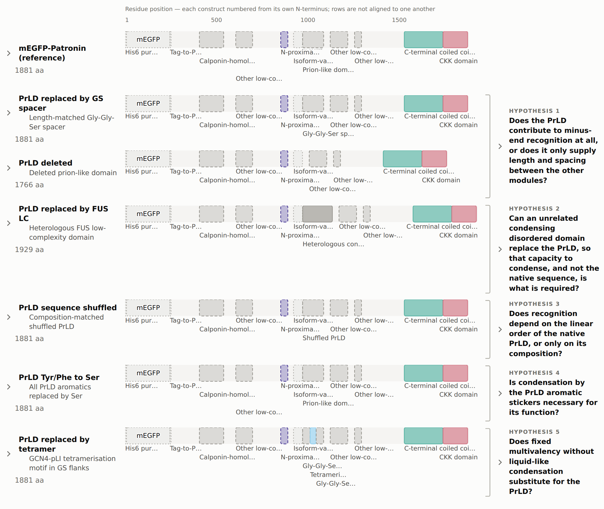

GPT 6.1 sol (high)
Also in this library: a version with the order of the spacers scrambled, and a Gly/Ser cassette of the same length in place of the domain.
Construct Maps / Patronin: sequence or condensation?
Patronin, the single fly member of the CAMSAP family, binds microtubule minus ends and protects them from kinesin-13, which would otherwise depolymerize them 1. Mammalian CAMSAP2 also condenses with tubulin in vitro, so phase separation may be a general feature of the family 2. Patronin has a long disordered region, and the prompt asks about a prion-like segment within it. Aromatic residues in domains of this kind set how strongly they phase separate 3. The question is whether the segment recognizes minus ends through its specific sequence, or only through its capacity to condense.
The prompt we gave GPT and Claude
Design a library of Drosophila Patronin (UniProt A1ZAU8) constructs to test whether its prion-like domain recognizes microtubule minus ends through its primary sequence or through its capacity to condense. Only use literature published before 2026-01-01.
GPT 6.1 sol (high)
Also in this library: a version with the order of the spacers scrambled, and a Gly/Ser cassette of the same length in place of the domain.
Claude Sonnet 5.5 (high)
Also in this library: a Gly-Gly-Ser spacer of the same length, a shuffled domain, and a GCN4 tetramer, which gives fixed multivalency without liquid-like condensation.
A deletion cannot answer this, because it removes the sequence and the condensation together. Both libraries therefore build constructs that keep one and change the other: a replacement from another protein that condenses, and a version of the domain with its aromatic residues removed. They differ in the donor sequence, in the controls, and in where they draw the domain's boundaries.

The deletion shows whether the domain contributes at all. The hnRNPA1 swap supplies condensation with a different sequence. The aromatic-depleted swap and the Gly/Ser cassette check that any rescue comes from condensation and not from filling the gap. GPT asks that each be compared at matched concentrations of soluble protein, so differences in condensation are not confused with differences in recognition.
The record notes that the hnRNPA1 domain is shorter than the segment it replaces and contains an RNA-interacting region, so a rescue could also come from other contacts or a change in localization.
a1-swap from the design recorda1-swap in GPT 6.1 sol (high). Places the hnRNPA1 low-complexity domain between the native flanks.
The shuffled domain keeps the composition and loses the order. The FUS domain supplies condensation with a different sequence. The tetramer supplies multivalency without condensation. If the FUS domain works and the tetramer does not, condensation is what Patronin needs, and neither the native sequence nor multivalency alone is enough.
Where the domain begins and ends was a judgment call. Claude took it to be residues 721–835, and GPT took 713–1038. Aromatic residues set the stickiness of domains like this 3, so the number of aromatic residues a construct changes depends on that choice.
aro-ser from the design recordaro-ser in Claude Sonnet 5.5 (high). Fourteen single-residue substitutions, no change in length.The paper, posted in October 2026, found that Patronin condenses on its own and that a prion-like domain of about 300 residues drives this 4. Deleting the domain made Patronin spread evenly along microtubules in S2 cells and prevented condensates. Replacing all 23 aromatic residues with serine sharply reduced condensation and abolished minus-end enrichment, so the aromatic residues act as stickers 4.
Swapping in two copies of the hnRNPA1 low-complexity domain restored condensates that gathered at minus ends, and mutating that domain's aromatic residues abolished the effect. This answers the question in the prompt: condensation capacity, not the Patronin sequence, is what minus-end enrichment needs 4.
Condensation alone is not enough. The isolated domain condensed but did not bind microtubules, and the CKK domain bound microtubules but did not pick out minus ends. Joining the two gave condensates that tracked minus ends, and the aromatic mutant version lost that preference and failed to stop microtubules from treadmilling 4. A second region that does not need CKK (residues 712 to 1457) also recognized minus ends once condensation was restored with light. Strengthening the domain's aromatic interactions (Y16W) made a CKK-deleted construct condense and go to minus ends without light 4.
Both libraries built the paper's central comparison: the domain deleted, a condensing domain from another protein in its place, and the domain's aromatic residues removed. GPT used the same hnRNPA1 domain as the paper, including an aromatic-depleted version. Claude used the FUS domain, which tests the same idea with a different donor. The aromatic construct shows how much the boundaries mattered. The paper changed all 23 aromatic residues in a domain of about 300 residues. GPT changed 22 in a 326-residue segment (713–1038). Claude's domain was 115 residues (721–835), so its construct changed 14, tyrosine and phenylalanine only 4.
The paper also tested things neither library included: the CKK domain alone, the domain fused to CKK, tyrosine-to-tryptophan changes, and light-induced condensation. GPT did delete the CKK domain, as the paper did. Because that deletion barely condenses, the paper had to restore condensation with light to ask whether a second region recognizes minus ends. Claude keeps CKK in every construct, so its library could not have separated the two 4.
| Tested in the paper | GPT 6.1 sol (high) | Claude Sonnet 5.5 (high) |
|---|---|---|
| The prion-like domain deleted (ΔPrLD)Fig. 3D; Fig. 1L | Same editdeltaits domain is residues 713–1038 | Same editd-prldits domain is residues 721–835 |
| All 23 aromatic residues of the domain changed to serine (YFW23S)Fig. 3 (the 23 aromatic stickers are marked); Fig. 3H–L | Same editnative-aro22 aromatic residues (Y, F, W) in its domain | Relatedaro-ser14 residues, tyrosine and phenylalanine only |
| The domain replaced by the disordered region of HNRNPA1 (Patronin–HNRNPA1)Fig. 3G, P, Q; Fig. 7C, D | Same edita1-swap | Relatedfus-lcthe FUS low-complexity domain instead |
| The CKK domain deleted (ΔCKK)Fig. 6A | Same editdelta-ckkresidues 1458–1630 | Not proposed |
| PrLD with CKK, and CKK on its ownFig. 4I, J (CKK alone); Fig. 4K, L (PrLD-CKK) | Not proposed | Not proposed |
| Tyrosines changed to tryptophans in the domain (Y16W)Fig. 3M–O | Not proposed | Not proposed |
| An optogenetic PrLD, with and without YFW23SFig. 4D–H | Not proposed | Not proposed |
✓ same edit · ~ related: a different change at the same position, or the same idea · – not proposed. Construct names are the ones each library uses.